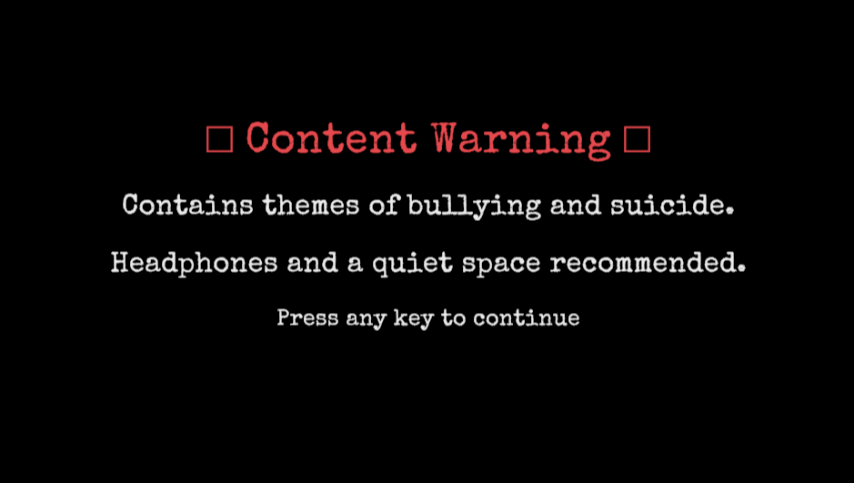
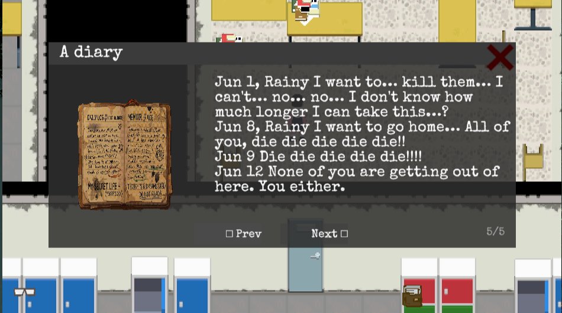
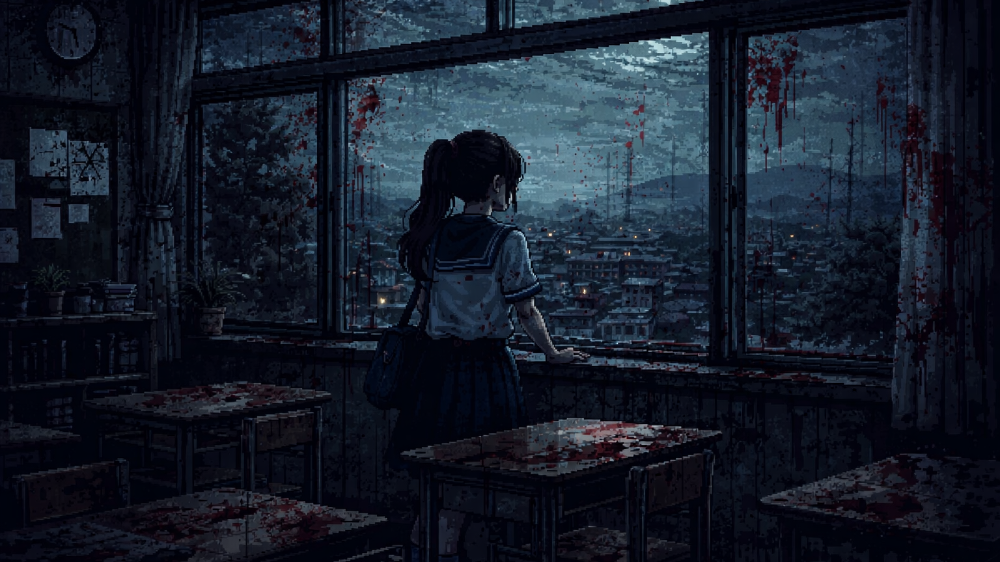
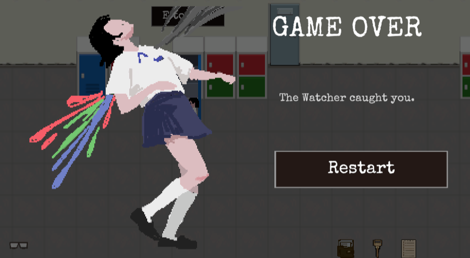

Respond to Signal 404
If you can hear it, it's already too late.
How to Play
About
Respond to Signal 404 is a top-down campus puzzle-horror game built in Unity. Kept behind for after-school cleaning duty, you put on a pair of glasses you 'accidentally' found — and the empty school starts to change. Hidden signals surface, classrooms that shouldn't exist appear, and something refuses to stop following you.
Beneath the horror, the game is about school bullying. As you explore, you piece together the truth behind a girl's suicide — what was done to her, and what the people around her chose not to see. It sets out to say something plainly: bullying does real, lasting harm, and looking away is never neutral.
I led the game and narrative design: I built the environments and the placement of every prop, shaped the gameplay flow and the order in which the puzzles unlock, reviewed and helped write the worldview and story, and produced all of the game's sound effects, with some additional support on 2D art. Co-developed with Ziwei Su (programming & music), Soda (2D art), 狸子 (technical art), 小E (narrative), and 伢伢乐 (UI).
Trailer
Screenshots





Gameplay Walkthrough
[Walkthrough subtitle — TBD]